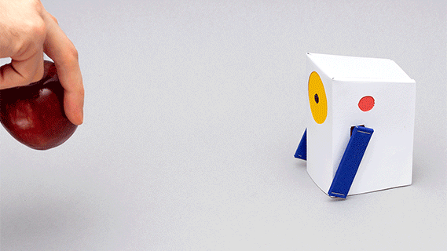

展示简单实验的AI应用展示台，可通过图像、文字、音乐等方式探索机器学习。
Teachable Machine
训练计算机以识别您自己的图像，声音和姿势。Teachable Machine是基于Web的工具，可让每个人快速，轻松地访问机器学习模型。
Sounds in Space
太空中的声音：AR音频实验的集合。 Sounds In Space工具包可让您策划自己的基于位置的音频体验
Look to Speak
这是一个Android应用程序，使人们可以用眼睛选择预先写好的词组并大声说出来。

通过Alto探索机器学习
Alto（一个可教导的小对象）是一个开放源代码的AI实验。 通过帮助您构建自己的可教对象，它介绍了机器学习的基础。您可以通过按侧面的按钮之一来教Alto识别事物。

Just a Line
Just a Line是一款适用于iOS和Android的应用程序，可让您在增强现实中制作简单的图纸，然后与短片分享您的创作。

Lines of Play
一个开源的AR实验，使用Google的ARCore深度API生成与现实世界互动的多米诺骨牌艺术作品。深度图提供了比以往更精细的场景数据。
阅读更多